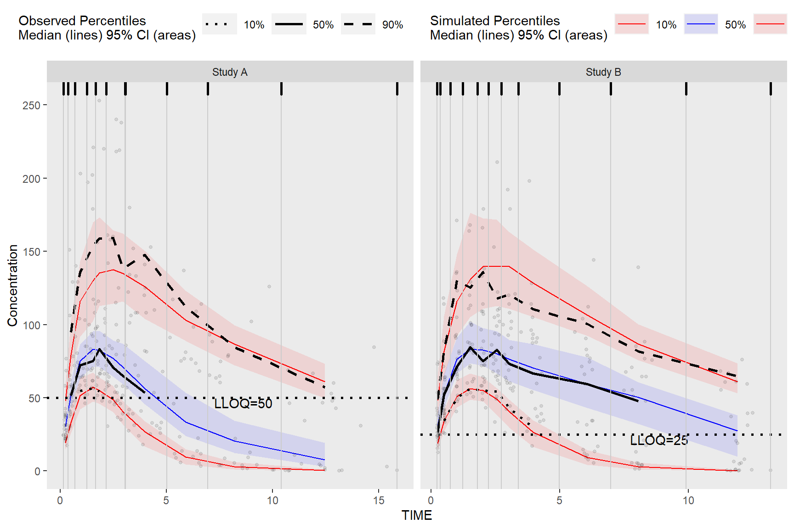
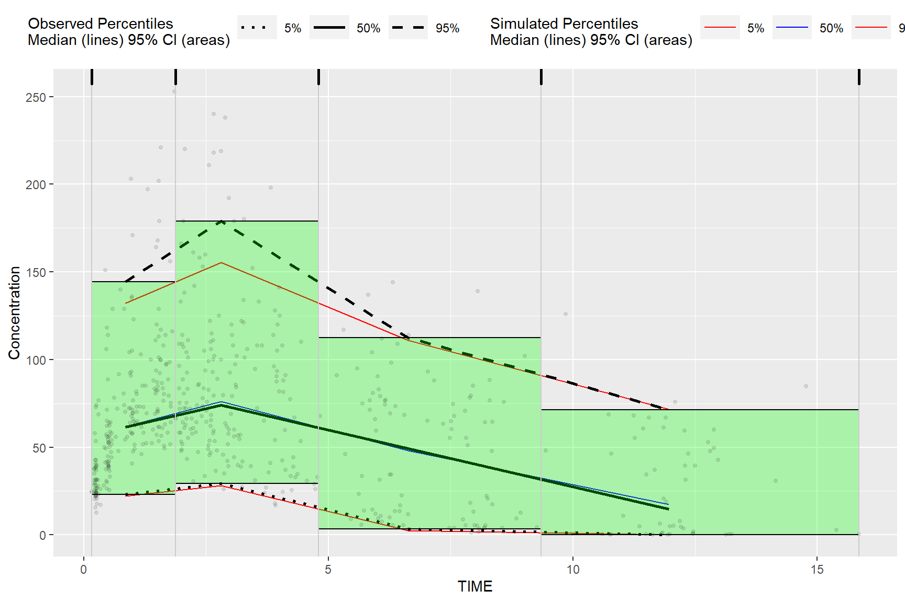
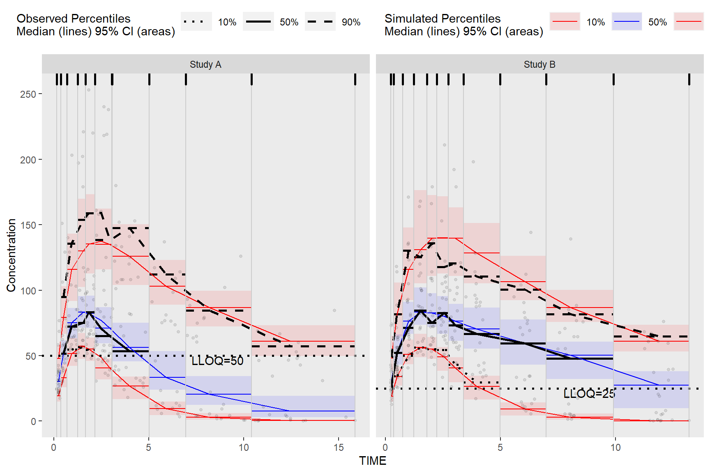
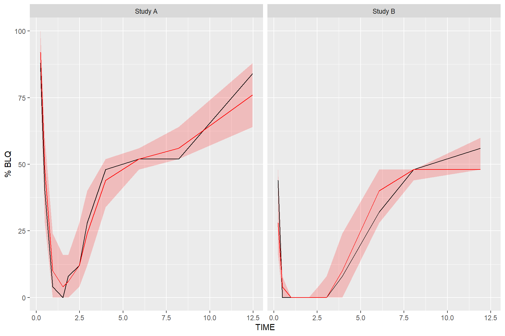

Chapter 5 Extending Further with ggplot2
While the built in plot() function make it easy to quickly visualize the derived VPC, the tidyvpcobj can be plotted using ggplot2 for complete plot customization.
5.1 Plot VPC
obs_data$LLOQ <- ifelse(obs_data$STUDY == "Study A", 50, 25)
vpc <- observed(obs_data, x = TIME, y = DV) %>%
simulated(sim_data, y = DV) %>%
censoring(blq = DV < LLOQ, lloq = LLOQ) %>%
stratify(~STUDY) %>%
binning(bin = NTIME) %>%
vpcstats(qpred = c(0.1, 0.5, 0.9))
ggplot(vpc$stats, aes(x = xbin)) +
facet_grid(~STUDY, scales = "free", as.table = FALSE) +
geom_ribbon(aes(ymin = lo, ymax = hi, fill = qname, col = qname, group = qname),alpha = 0.1, col = NA) +
geom_line(aes(y = md, col = qname, group = qname)) +
geom_line(aes(y = y, linetype = qname), size = 1) +
geom_hline(data=unique(obs_data[, .(STUDY, LLOQ)]), aes(yintercept=LLOQ), linetype="dotted", size=1) +
geom_text(data = unique(vpc$data[, .(LLOQ), by = "STUDY"]),
aes(x = 10, y = LLOQ, label = paste("LLOQ", LLOQ, sep = "="), ), vjust = 1, hjust = 1) +
scale_colour_manual(name = "Simulated Percentiles\nMedian (lines) 95% CI (areas)",
breaks = c("q0.1", "q0.5", "q0.9"),
values = c("red", "blue", "red"),
labels = c("10%", "50%", "90%")) +
scale_fill_manual(name = "Simulated Percentiles\nMedian (lines) 95% CI (areas)",
breaks = c("q0.1", "q0.5", "q0.9"),
values = c("red", "blue", "red"),
labels = c("10%", "50%", "90%")) +
scale_linetype_manual(name = "Observed Percentiles\nMedian (lines) 95% CI (areas)",
breaks = c("q0.1", "q0.5", "q0.9"),
values = c("dotted", "solid", "dashed"),
labels = c("10%", "50%", "90%")) +
guides(fill = guide_legend(order = 2), colour = guide_legend(order = 2), linetype = guide_legend(order = 1)) +
theme(legend.position = "top", legend.key.width = grid::unit(1, "cm")) +
labs(x = "TIME", y = "Concentration") +
geom_point(data = vpc$obs, aes(x = x, y = y), size = 1, alpha = 0.1, show.legend = FALSE) +
geom_vline(data = bininfo(vpc)[, .(x = sort(unique(c(xleft, xright)))), by = names(vpc$strat)],aes(xintercept = x), size = rel(0.5), col = "gray80") +
theme(panel.grid = element_blank()) +
geom_rug(data = bininfo(vpc)[, .(x = sort(unique(c(xleft, xright)))), by = names(vpc$strat)],aes(x = x), sides = "t", size = 1)
5.2 Plot Rectangles
The results from bininfo() make it easy to plot a rectangle VPC using ggplot2.
vpc <- observed(obs_data, x=TIME, y=DV) %>%
simulated(sim_data, y=DV) %>%
binning(bin = "jenks", nbins = 4) %>%
vpcstats()
#Get vpcstats df
stats <- vpc$stats
#Get bininfo df
bin_information <- bininfo(vpc)
#Left join bin_info to vpcstats on bin
bin_information <- stats[bin_information, on = "bin"]
#Generate ymin
bin_information <- bin_information[, ymin := min(y), by = "bin"]
#Generate ymax
bin_information <- bin_information[, ymax := max(y), by = "bin"]
head(bin_information)## bin xbin qname y lo md hi nobs
## 1: [0.158,1.89) 0.8418133 q0.05 22.94 19.05306 22.1295 26.32546 213
## 2: [0.158,1.89) 0.8418133 q0.5 61.50 56.61835 61.7225 68.59207 213
## 3: [0.158,1.89) 0.8418133 q0.95 144.40 108.56340 132.0360 156.84105 213
## 4: [1.89,4.83) 2.8021930 q0.05 29.38 23.01417 28.2300 32.95001 187
## 5: [1.89,4.83) 2.8021930 q0.5 74.10 66.70315 75.9475 82.94110 187
## 6: [1.89,4.83) 2.8021930 q0.95 179.00 135.74530 155.3395 180.72525 187
## xmedian xmean xmin xmax xmid xleft xright xcenter
## 1: 0.8418133 0.8717959 0.1575342 1.860852 1.009193 0.1575342 1.872980 1.015257
## 2: 0.8418133 0.8717959 0.1575342 1.860852 1.009193 0.1575342 1.872980 1.015257
## 3: 0.8418133 0.8717959 0.1575342 1.860852 1.009193 0.1575342 1.872980 1.015257
## 4: 2.8021930 2.9458444 1.8851078 4.772347 3.328727 1.8729798 4.800346 3.336663
## 5: 2.8021930 2.9458444 1.8851078 4.772347 3.328727 1.8729798 4.800346 3.336663
## 6: 2.8021930 2.9458444 1.8851078 4.772347 3.328727 1.8729798 4.800346 3.336663
## ymin ymax
## 1: 22.94 144.4
## 2: 22.94 144.4
## 3: 22.94 144.4
## 4: 29.38 179.0
## 5: 29.38 179.0
## 6: 29.38 179.0Plot rectangles using ymin and ymax, the min/max y values in vpc$stats grouped by bin.
ggplot(bin_information, aes(x = xbin)) +
geom_line(aes(y = md, col = qname, group = qname)) +
geom_line(aes(y = y, linetype = qname), size = 1) +
geom_rect(aes(xmin= xleft,xmax= xright, ymin = ymin, ymax = ymax),alpha = .1, col = "black", fill = "green") +
geom_point(data = vpc$obs, aes(x = x, y = y), size = 1, alpha = 0.1, show.legend = FALSE) +
scale_colour_manual(name = "Simulated Percentiles\nMedian (lines) 95% CI (areas)",
breaks = c("q0.05", "q0.5", "q0.95"),
values = c("red", "blue", "red"),
labels = c("5%", "50%", "95%")) +
scale_linetype_manual(name = "Observed Percentiles\nMedian (lines) 95% CI (areas)",
breaks = c("q0.05", "q0.5", "q0.95"),
values = c("dotted", "solid", "dashed"),
labels = c("5%", "50%", "95%")) +
geom_vline(data = bin_information[, list(x = sort(unique(c(xleft, xright))))],aes(xintercept = x), size = rel(0.5), col = "gray80") +
geom_rug(data = bin_information[, list(x = sort(unique(c(xleft, xright))))],aes(x = x), sides = "t", size = 1) +
guides(fill = guide_legend(order = 2), colour = guide_legend(order = 2), linetype = guide_legend(order = 1)) +
theme(legend.position = "top", legend.key.width = grid::unit(1, "cm")) +
labs(x = "TIME", y = "Concentration")
Alternatively, we can obtain the required data for plotting used in the above bin_information data frame by merging vpc$stats and bininfo(vpc) on bin in the ggplot2 data argument. If stratifying you will need to include the name of the stratification variable(s) in the data.table merge i.e. vpc$stats[bininfo(vpc), on=c("STUDY", "bin")]. In the rectangle vpc below, we will stratify on STUDY and plot rectangles for each quantile.
obs_data$LLOQ <- obs_data[, ifelse(STUDY == "Study A", 50, 25)]
vpc <- observed(obs_data, x = TIME, y = DV) %>%
simulated(sim_data, y = DV) %>%
censoring(blq = DV < LLOQ, lloq = LLOQ) %>%
stratify(~STUDY) %>%
binning(bin = NTIME) %>%
vpcstats(qpred = c(0.1, 0.5, 0.9))
ggplot(vpc$stats[bininfo(vpc), on=c("STUDY", "bin")], aes(x = xbin)) +
facet_grid(~STUDY, scales = "free", as.table = FALSE) +
geom_rect(aes(xmin = xleft, xmax = xright, ymin = lo, ymax = hi, fill = qname, col = qname, group = qname),alpha = 0.1, col = NA) +
geom_segment(aes(x = xleft, xend = xright, y = md, yend = md, col = qname, group = qname)) +
geom_segment(aes(x = xleft, xend = xright, y = y, yend = y, linetype = qname), size = 1) +
geom_line(aes(y = md, col = qname, group = qname)) +
geom_line(aes(y = y, linetype = qname), size = 1) +
geom_hline(data=unique(obs_data[, list(STUDY, LLOQ)]), aes(yintercept=LLOQ), linetype="dotted", size=1) +
geom_text(data = unique(vpc$data[, list(LLOQ), by = "STUDY"]),
aes(x = 10, y = LLOQ, label = paste("LLOQ", LLOQ, sep = "="), ), vjust = 1, hjust = 1) +
scale_colour_manual(name = "Simulated Percentiles\nMedian (lines) 95% CI (areas)",
breaks = c("q0.1", "q0.5", "q0.9"),
values = c("red", "blue", "red"),
labels = c("10%", "50%", "90%")) +
scale_fill_manual(name = "Simulated Percentiles\nMedian (lines) 95% CI (areas)",
breaks = c("q0.1", "q0.5", "q0.9"),
values = c("red", "blue", "red"),
labels = c("10%", "50%", "90%")) +
scale_linetype_manual(name = "Observed Percentiles\nMedian (lines) 95% CI (areas)",
breaks = c("q0.1", "q0.5", "q0.9"),
values = c("dotted", "solid", "dashed"),
labels = c("10%", "50%", "90%")) +
guides(fill = guide_legend(order = 2), colour = guide_legend(order = 2), linetype = guide_legend(order = 1)) +
theme(legend.position = "top", legend.key.width = grid::unit(1, "cm")) +
labs(x = "TIME", y = "Concentration") +
geom_point(data = vpc$obs, aes(x = x, y = y), size = 1, alpha = 0.1, show.legend = FALSE) +
geom_vline(data = bininfo(vpc)[, list(x = sort(unique(c(xleft, xright)))), by = names(vpc$strat)],aes(xintercept = x), size = rel(0.5), col = "gray80") +
theme(panel.grid = element_blank()) +
geom_rug(data = bininfo(vpc)[, list(x = sort(unique(c(xleft, xright)))), by = names(vpc$strat)],aes(x = x), sides = "t", size = 1)
5.3 Plot Below Quantification Limit (BQL)
If using the censoring() function, the resulting tidyvpcobj will also contain a pctblq table. Use ggplot2 to plot the percentage of data below the limit of quantification across bins.
We can include geom_ribbon() using the lo and hi columns in the vpc$pctblq table to denote the lower/upper bounds of our confidence interval. Let’s also plot the median %blq of the simulated data using the md column in the vpc$pctblq table.
obs_data$LLOQ <- ifelse(obs_data$STUDY == "Study A", 50, 25)
vpc <- observed(obs_data, x = TIME, y = DV) %>%
simulated(sim_data, y = DV) %>%
censoring(blq = DV < LLOQ, lloq = LLOQ) %>%
stratify(~STUDY) %>%
binning(bin = NTIME) %>%
vpcstats(qpred = c(0.1, 0.5, 0.9))
ggplot(vpc$pctblq) +
facet_grid(~STUDY) +
geom_ribbon(aes(x = xbin, ymin= lo, ymax = hi), fill = "red", alpha = .2) +
geom_line(aes(x = xbin, y = y)) +
geom_line(aes(x = xbin, y = md), color = "red") +
labs(x= "TIME", y= "% BLQ")